The “gg” in ggplot2 stands for the “Grammar of Graphics.” The grammar of graphics is a philosophy of data visualization which forces you to think about what you want to visualize how. Hadley Wickham followed this philosophy to implement the ggplot2 package.
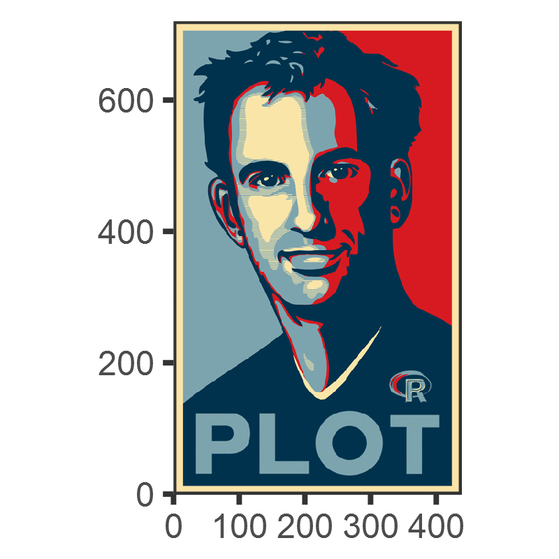
The grammar of graphics specifies building blocks out of which an analyst builds a plot. These include, in the order of application:
geoms) (How do we want to see our data? Points, lines, bars, …)geoms (e.g. add regression lines to a scatterplot)(see this link for more details)
class: inverse background-image: url(“Ninja-header.svg_opacity1.png”) background-size: contain
“Think of graphs as comparison” - Andrew Gelman
Let’s look at the ggplot2 building blocks in practice:
library(gapminder) # loads the gapminder data
library(tidyverse) # loads ggplot2 and other packages
example_plot <- ggplot(data = gapminder, # specify which dataset to use
aes(x = year, # what goes on the x axis?
y = lifeExp )) + # what's on the y axis?
geom_point() # with which geometric object should the data be displayed?Note the + that ties the building blocks together.
print(example_plot)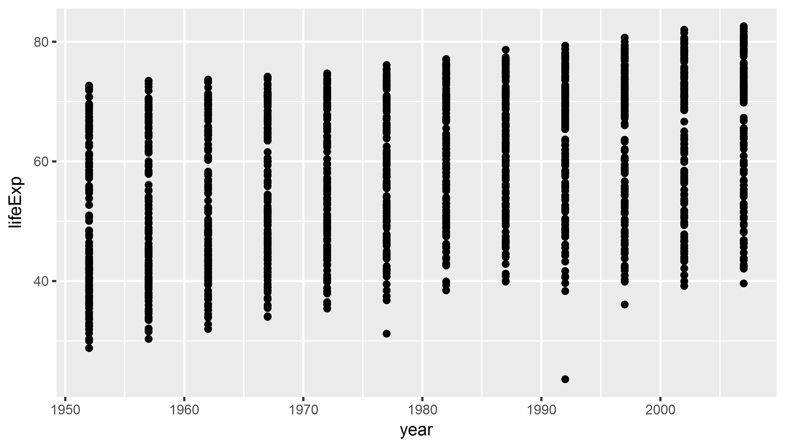
library(gapminder)
library(tidyverse)
example_plot <- ggplot(data = gapminder,
aes(x = year, # the aes() function defines aesthetics
y = lifeExp,
size = gdpPercap)) + # map the aesthetic 'size' to gdp/pc
geom_point()
# print(example_plot)print(example_plot)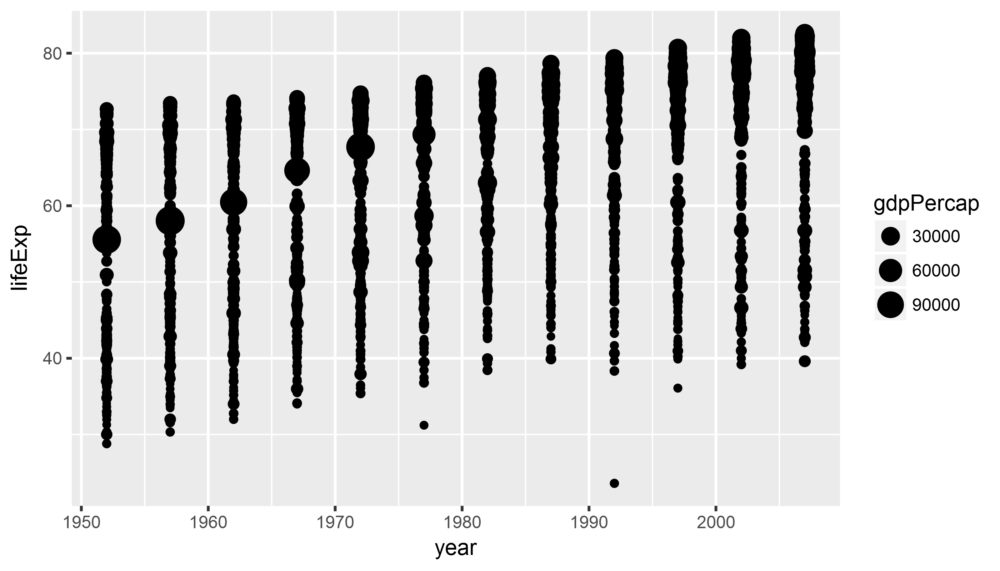
library(gapminder)
library(tidyverse)
example_plot <- ggplot(data = gapminder,
# the aes() function defines aesthetics
aes(x = year, # x axis
y = lifeExp, # y axis
color = continent, # map color to continent
size = gdpPercap)) + # map the aesthetic 'size' to gdp/pc
geom_point() print(example_plot)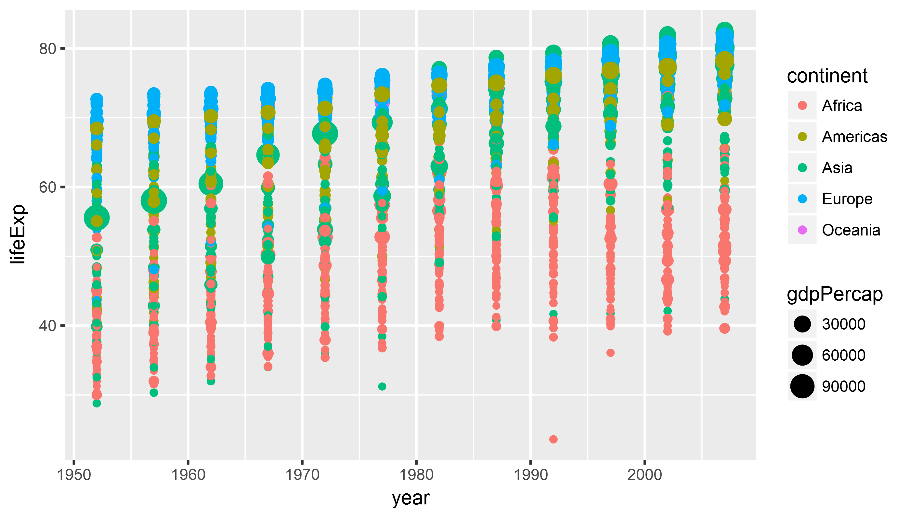
class: inverse background-image: url(“Ninja-header.svg_opacity1.png”) background-size: contain
Think hard about what you want to visualize!
Don’t use too many aesthetics - just use those that help you clarify your comparison! > “When ggplot successfully makes a plot but the result looks insane, the reason is almost always that something has gone wrong in the mapping between the data and aesthetics for the geom being used” - Kieran Healy
library(gapminder)
library(tidyverse)
example_plot <- ggplot(data = gapminder,
aes(x = year,
y = lifeExp)) +
geom_line() # lines instead of pointsWhoops! What happened here?
print(example_plot)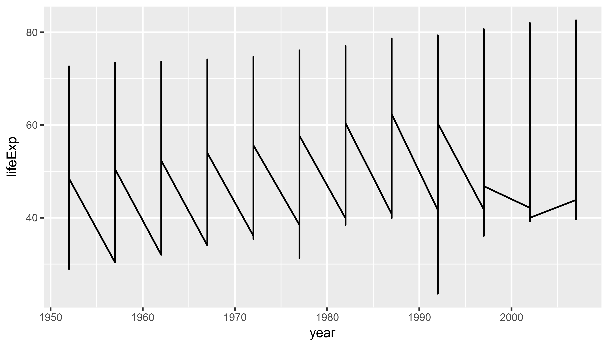
library(gapminder)
library(tidyverse)
example_plot <- ggplot(data = gapminder,
aes(x = year,
y = lifeExp,
group = country)) + # tell ggplot2 which
# observations belong together
geom_line() print(example_plot)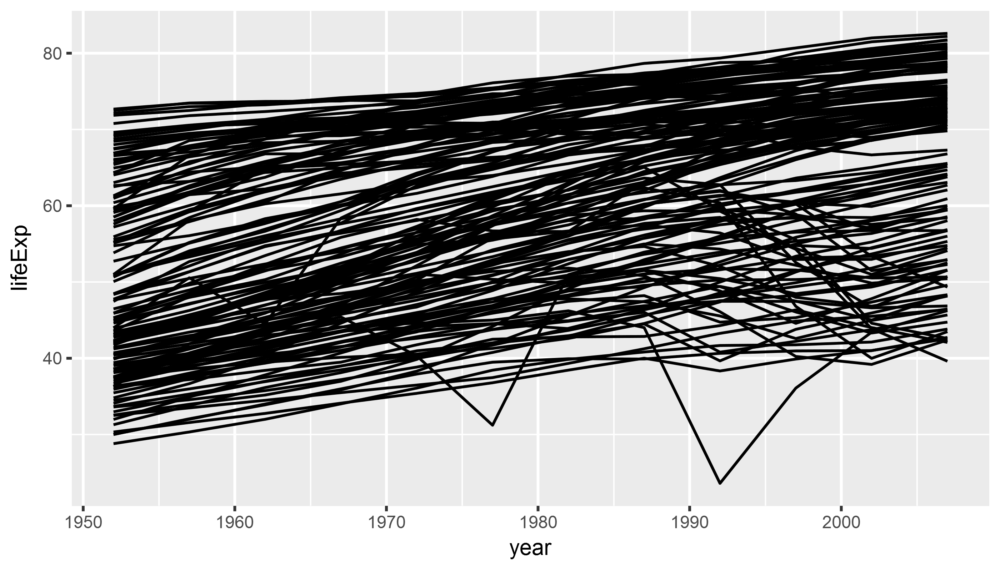
library(gapminder)
library(tidyverse)
example_plot <- ggplot(data = gapminder,
aes(x = year,
y = lifeExp)) +
geom_point() +
geom_smooth(method = "lm") # add regression lineprint(example_plot)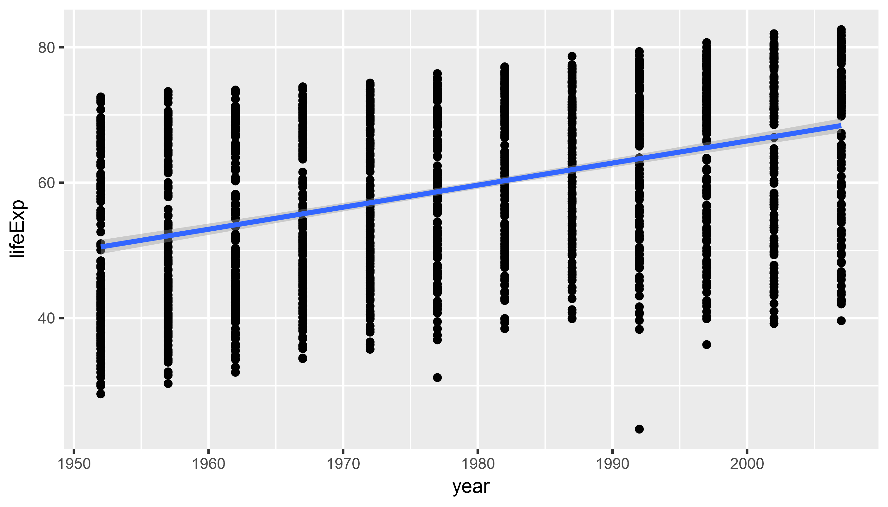
library(gapminder)
library(tidyverse)
example_plot <- ggplot(data = gapminder,
aes(x = year,
y = lifeExp)) +
geom_point() +
geom_smooth(method = "lm") +
geom_smooth(method = "loess",
color = "firebrick") # fix smoother colorBonus question: in this example we fix the color, i.e. we map it to a fixed value (firebrick which is red). What happens if we would map color to a variable in the gapminder dataset, such as continent?
print(example_plot)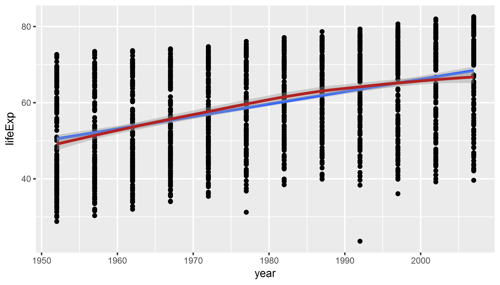
Subsetting/filtering data helps to reduce complexity & get at the comparison that we want. To do that, we use the dplyr package which is part of the tidyverse.
To filter data, we use the filter() function.
library(tidyverse) # loads dplyr package, among others
library(gapminder)
gapminder_americas <- gapminder %>% # the %>% `chains` together functions
filter(continent == "Americas") # that's two "="
head(gapminder_americas, 5)## # A tibble: 5 x 6
## country continent year lifeExp pop gdpPercap
## <fctr> <fctr> <int> <dbl> <int> <dbl>
## 1 Argentina Americas 1952 62.5 17876956 5911
## 2 Argentina Americas 1957 64.4 19610538 6857
## 3 Argentina Americas 1962 65.1 21283783 7133
## 4 Argentina Americas 1967 65.6 22934225 8053
## 5 Argentina Americas 1972 67.1 24779799 9443Modify/add variables to existing data frame. We modify data with the mutate() function and chain them together using the pipe operator %>%.
library(tidyverse) # loads dplyr package, among others
library(gapminder)
gapminder_americas <- gapminder %>%
filter(continent == "Americas") %>%
# create a character/categorical variable
# to distinguish between North/South America
mutate(north_america = ifelse(country == "United States" |
country == "Canada",
"north_america",
"south_america"))
head(gapminder_americas,3)## # A tibble: 3 x 7
## country continent year lifeExp pop gdpPercap north_america
## <fctr> <fctr> <int> <dbl> <int> <dbl> <chr>
## 1 Argentina Americas 1952 62.5 17876956 5911 south_america
## 2 Argentina Americas 1957 64.4 19610538 6857 south_america
## 3 Argentina Americas 1962 65.1 21283783 7133 south_americaUse filtered and preprocessed data to highlight comparisons in ggplot:
ggplot(gapminder_americas, # only use data for Americas
aes(x = year,
y = gdpPercap,
color = north_america)) + # map "north_america" category to color
geom_point()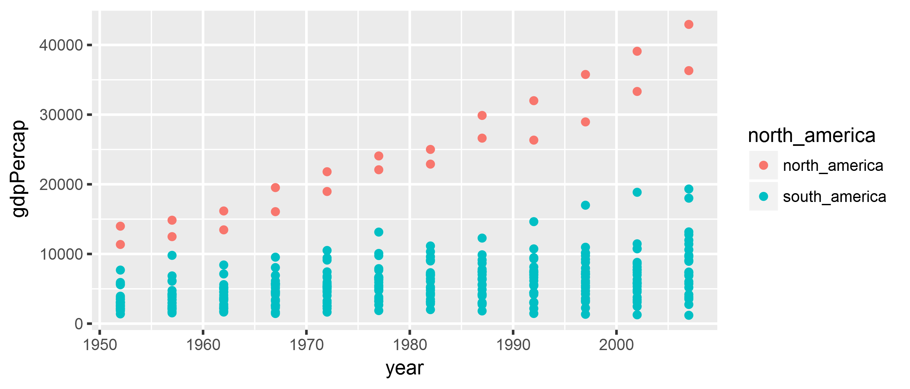
Plot the development of population size (pop variable in the gapminder data) over time (year variable in the gapminder data) in Asia (hint: continent == "Asia"). Add a trend line and/or smooth line.
Bonus exercise: Plot the relationship between population size pop and gdpPercap! (hint: might make sense to wrap pop and gdpPercap in log()).
library(tidyverse)
library(gapminder)
gapminder_asia <- gapminder %>%
filter(continent == "Asia")
asia_pop <- ggplot(gapminder_asia,
aes(x = year, y = pop)) +
geom_point() +
geom_smooth(method = "lm")
print(asia_pop)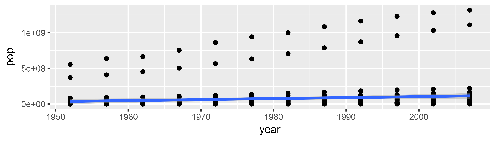
Goal:
Think about the data! What is the comparison?
Genocide vs. non-genocide countries => Rwanda vs. rest of Africa
library(gapminder)
library(tidyverse)
gapminder_africa <- gapminder %>%
# filter only African countries
filter(continent == "Africa") %>%
# create a categorical variable that distinguishes
# between Rwanda and other African countries
mutate(color_plot = ifelse(country != "Rwanda", # != = "!" + "="
"Other African Countries",
"Rwanda"))rwanda_plot <- ggplot(gapminder_africa,
aes(x = year,
y = lifeExp,
group = country,
color = color_plot)) +
geom_line(aes(alpha = color_plot)) # map alpha to "color_plot" variable
# ggplot chooses alpha level automatically
print(rwanda_plot)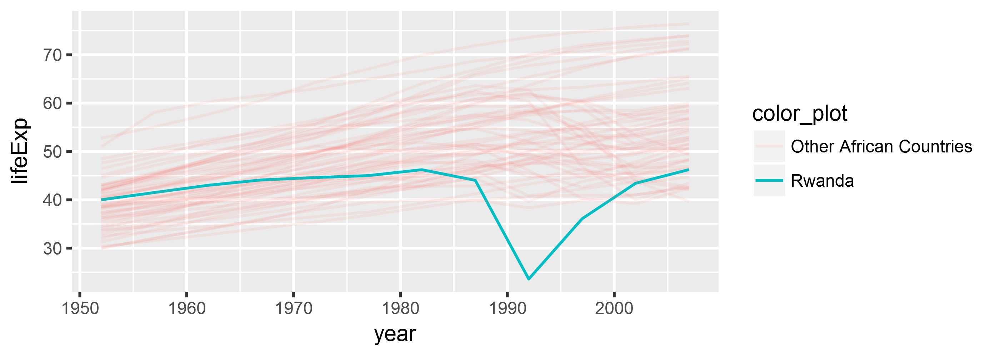
rwanda_plot <- ggplot(gapminder_africa,
aes(x = year,
y = lifeExp,
group = country,
color = color_plot)) +
geom_line(aes(alpha = color_plot)) +
# we assign colors/alpha values/other "aes" through "scale" functions
scale_alpha_discrete("", range = c(0.5, 1)) +
scale_color_manual("", values = c("lightgrey", "black"))
print(rwanda_plot)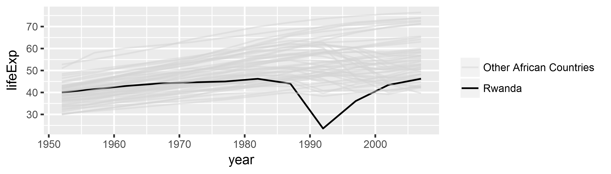
rwanda_plot <- ggplot(gapminder_africa,
aes(x = year,
y = lifeExp,
group = country,
color = color_plot)) +
geom_line(aes(alpha = color_plot)) +
scale_alpha_discrete("", range = c(0.5, 1)) +
scale_color_manual("", values = c("lightgrey", "black")) +
# add theme
theme_bw() + # black and white theme
theme(legend.position = "bottom", # legend position
panel.grid = element_blank()) # remove grid linesprint(rwanda_plot)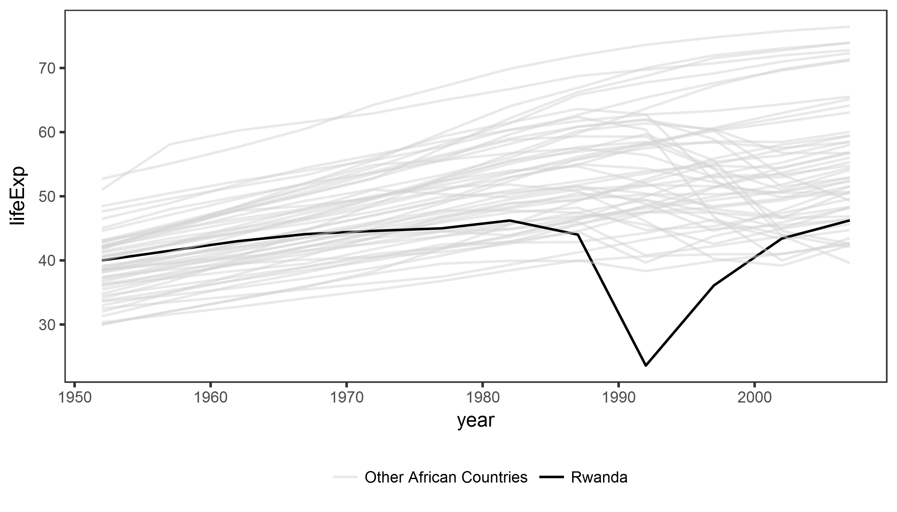
rwanda_plot <- ggplot(gapminder_africa,
aes(x = year,
y = lifeExp,
group = country,
color = color_plot)) +
geom_line(aes(alpha = color_plot)) +
scale_alpha_discrete("", range = c(0.5, 1)) +
scale_color_manual("", values = c("lightgrey", "black")) +
theme_bw() +
theme(legend.position = "bottom",
panel.grid = element_blank()) +
# labels, captions, and title/subtitle
labs(x = "", y = "Life Expectancy in Years",
title = "The Impact of Genocide on Life Expectancy",
subtitle = "Life expectancy for newborns extrapolated from mortality rate in a given year.",
caption = " Data source: gapminder.org")print(rwanda_plot)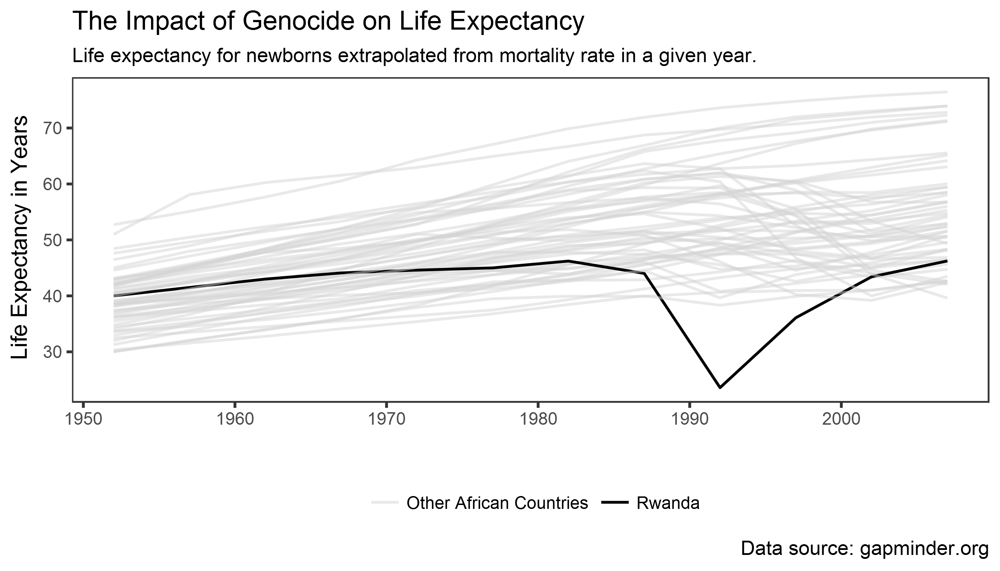
class: inverse background-image: url(“Ninja-header.svg_opacity1.png”) background-size: contain
Think hard about what you want to visualize!
Don’t use too many aesthetics - just use those that help you clarify your comparison!
Trial and error is your friend!
> “If you are unsure of what each piece of code does, take advantage of ggplot’s additive character. Working backwards from the bottom up, remove each + some_function(…) statement one at a time to see how the plot changes.” - Kieran Healy